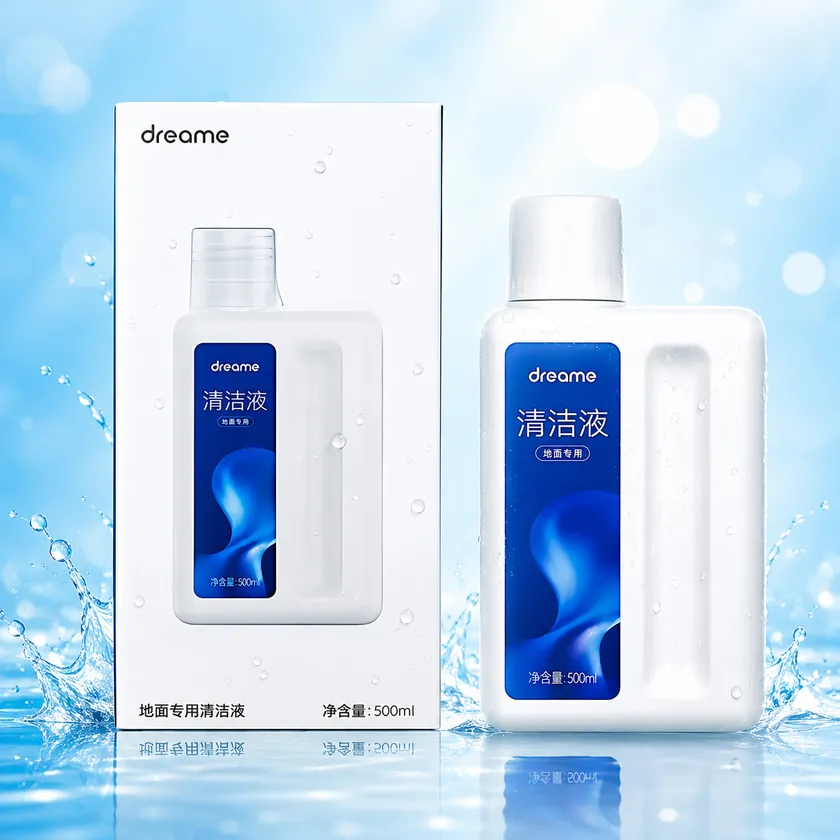
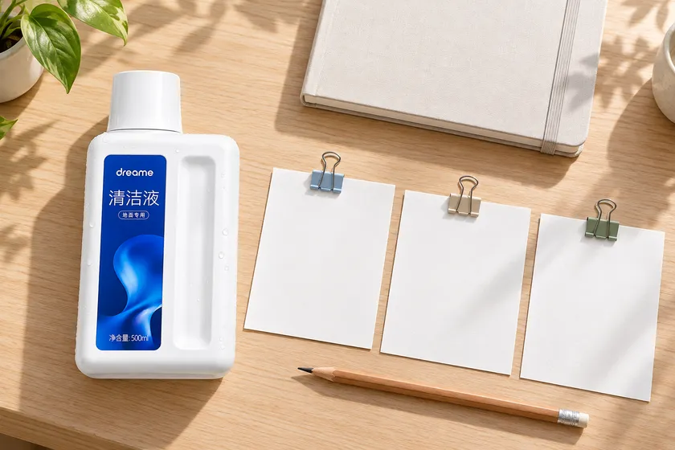
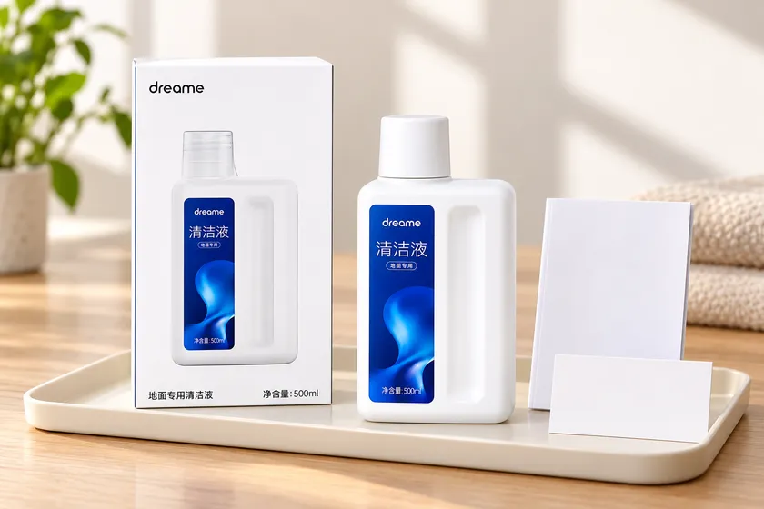

드리미 (Dreame)
드리미 세제 500ml 개봉 뒤, 사용기한·보관 안내를 기록하는 법
글·구성: 제이상점 · 기종별 1:1 호환 실물 점검 · 교체 주기 비교표 · 스마트스토어 패키지 안내

핵심 관리 · 선택 체크포인트
- 판매자 안내｜제이상점이 제조사 공식 자료와 현재 자사 상품·옵션을 조사해 직접 작성했습니다.
- 드리미 세제를 개봉한 뒤에는 내가 연 날짜와 제조사가 표시한 날짜·보관 조건을 구분해 기록해 주세요.
- 실제 상품 병의 형태를 참고해 수납 위치를 구성한 예시입니다.
- 개봉일은 내가 실제로 처음 연 날입니다.
- 드리미 미국 공식 세정제 페이지에는 1L 제품의 Shelf Life 항목과 보관 주의사항이 있습니다.
실물 부품 디테일 · 관리 구성 이미지




부품 규격 · 점검 기준표
| 구분 | 그대로 남길 내용 | 이것으로 계산하지 않을 것 |
|---|---|---|
| 내가 개봉한 날 | 확실히 아는 실제 날짜 또는 개봉일 미상 | 임의의 개봉 후 만료일 |
| 제품에 인쇄된 표시 | 읽을 수 있는 문자·숫자와 표시 위치 | 뜻을 모르는 코드의 날짜 변환 |
| 라벨의 보관 안내 | 해당 병에 적힌 문구와 확인 사진 | 다른 용량·해외 제품의 조건 대입 |
| 실제 보관 이력 | 현재 위치와 바뀐 시점, 모르는 구간 | 성분 안정성이나 계속 사용 가능 판정 |
💡 교체 주기가 겹치는 필터·브러시·물걸레·더스트백은 단품 배송비를 여러 번 내기보다 드리미 세제 기간별 세트(3개월·6개월·1년)로 미리 구비해 두면 물세척 후 24시간 교대 건조까지 끊김 없이 관리할 수 있습니다.
자주 묻는 질문 (FAQ)
Q. 드리미 세제 500ml 개봉 뒤의 내가 개봉한 날 규격과 관리 기준은 무엇인가요?
A. 확실히 아는 실제 날짜 또는 개봉일 미상 규격을 사용하며, 임의의 개봉 후 만료일 기준으로 점검·교체하면 청소 효율을 안정적으로 유지할 수 있습니다.
Q. 드리미 세제 500ml 개봉 뒤의 제품에 인쇄된 표시 규격과 관리 기준은 무엇인가요?
A. 읽을 수 있는 문자·숫자와 표시 위치 규격을 사용하며, 뜻을 모르는 코드의 날짜 변환 기준으로 점검·교체하면 청소 효율을 안정적으로 유지할 수 있습니다.
Q. 드리미 세제 500ml 개봉 뒤의 라벨의 보관 안내 규격과 관리 기준은 무엇인가요?
A. 해당 병에 적힌 문구와 확인 사진 규격을 사용하며, 다른 용량·해외 제품의 조건 대입 기준으로 점검·교체하면 청소 효율을 안정적으로 유지할 수 있습니다.
제이상점 1:1 검수 추천 패키지 · 구매 안내
☑️ 주문 전 확인해 두면 좋은 제이상점 안심 포인트
· 기종별 1:1 전용 규격 검수: 모델명·연식에 맞는 호환·정품 구성을 검수해 오주문 불안을 줄였습니다.
· 해외직배송 미리 주문 팁: 중국 구매대행·해외직배송 상품이므로 마지막 여분 1개를 꺼내 쓰는 시점에 개인통관고유부호와 함께 여유 있게 주문해 두시면 훨씬 경제적인 비용으로 끊김 없이 교체하실 수 있습니다.
· 기종별 1:1 전용 규격 검수: 모델명·연식에 맞는 호환·정품 구성을 검수해 오주문 불안을 줄였습니다.
· 해외직배송 미리 주문 팁: 중국 구매대행·해외직배송 상품이므로 마지막 여분 1개를 꺼내 쓰는 시점에 개인통관고유부호와 함께 여유 있게 주문해 두시면 훨씬 경제적인 비용으로 끊김 없이 교체하실 수 있습니다.
📖 더 많은 가정 내 사용 스토리와 상세 후기가 궁금하시다면
📱 네이버 블로그 모바일 원문 보기 ↗